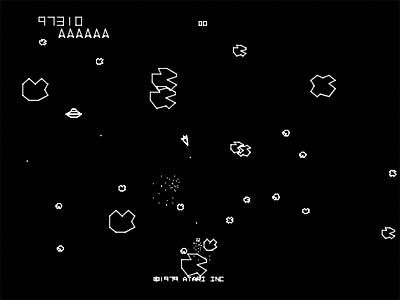
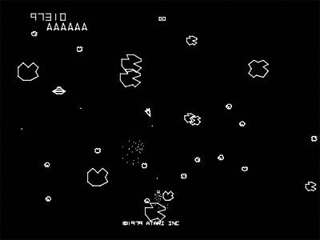

Asteroids do Game Maker 1.3:
Asteroids original:


Jogos Desenvolvidos
Asteroids(replica):
Esta é uma replica do jogo Asteroids de 1979 desenvolvido para Atari. O jogo foi desenvolvido no Game Maker Studio 1.3, reproduzindo as funcionalidades básicas de do jogo de Atari com o intuito de praticar a programação de jogo na linguagem do motor: a Game Maker Language(gml).
|
Asteroids do Game Maker 1.3: |
Asteroids original: |
|
|
 |